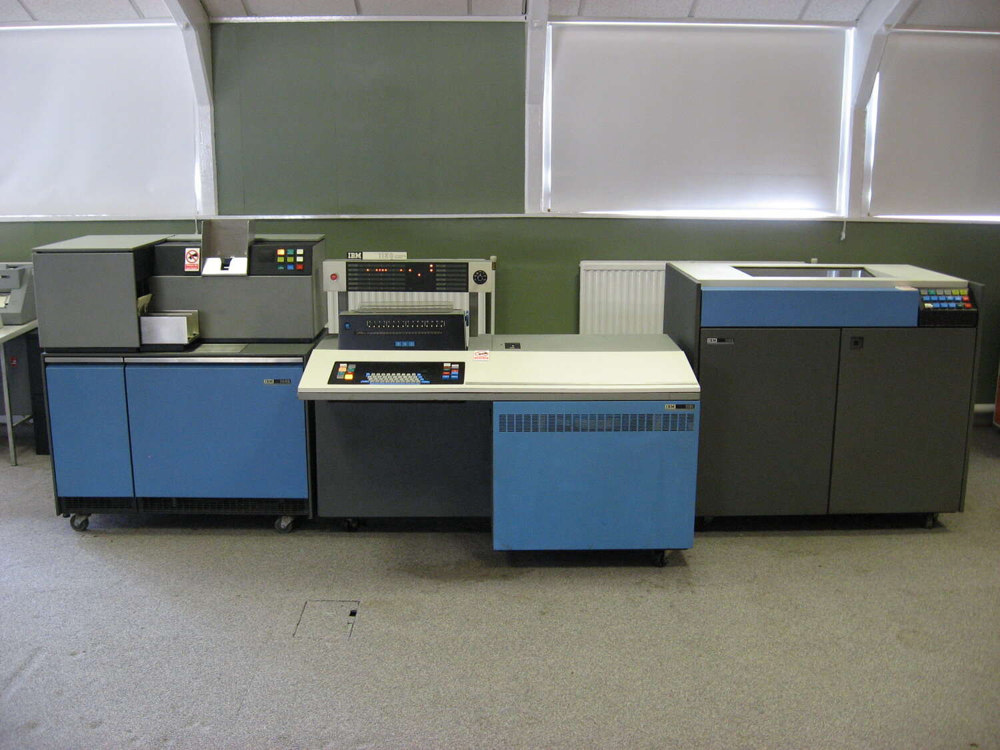
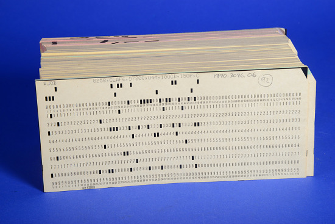
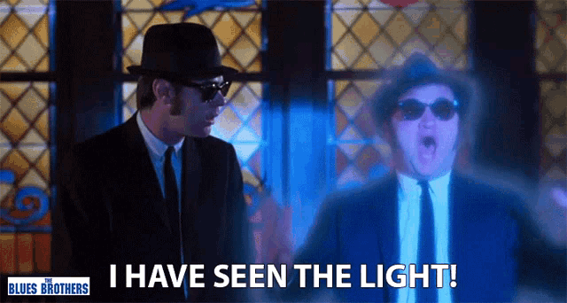

Curriculum Design and Patch Based Models to explore Computer Science Problem Solving in High School
Mike Zamansky
zamansky@gmail.com
@zamansky
cestlaz.github.io
Link to code
Link to presentation
A personal note

Stuyvesant
- Opened 1904 - trade school
- Public Magnet
- Test based admissions
CS at Stuy and elsewhere


- Electives by math teachers
- APCS
An epiphany

- Stuy kids would be alright without me
- Reading list:
- The Philosophical Computer - Grim, et al.
- Computational Beuaty of Nature - Flake
- Turtles Termites and Traffic Jams - Resnick
Hacking the school
- The Road to a requirement
- Effects on StuyCS and Stuy
Design considerations
- Not just programming
- Multiple modalities
- CS and non CS concepts
Design
- Why each language choice
- Netlogo, Scheme, C++
- Scheme, Netlogo, Python
Just Scheme and Netlogo
Results
- More students taking advanced CS
- Gender equality
- Non CS students and CS students approve
Cellular Automata